승강기기사 (2017-03-05 기출문제)
1과목: 승강기 개론
1. 비상용 엘리베이터는 소방관이 조작하여 엘리베이터 문이 닫힌 이후부터 몇 초 이내에 가장 먼 층에 도착하여야 하는가?
- 30
- 60
- 90
- 120
(정답률: 91%)

2. 카 비상정지장치가 작동될 때 부하가 없거나 부하가 균일하게 분포된 카 바닥은 정상적인 위치에서 몇 %를 초과하여 기울여지지 않아야 하는가?
- 1
- 3
- 5
- 6
(정답률: 89%)
3. 스프링 완충기의 stroke(완충기의 압축된 거리) 중 틀린 것은?
- 30m/min 이하는 38mm이다.
- 30m/min 초과 45m/min 이하는 64mm이다.
- 45m/min 초과 60m/min 이하는 100mm이다.
- 60m/min 초과 75m/min 이하는 120mm이다.
(정답률: 56%)
4. 승강로 내부의 작업구역으로 접근할 경우 사용하는 문이 만족하여야 할 내용으로 틀린 것은?(관련 규정 개정전 문제로 여기서는 기존 정답인 4번을 누르면 정답 처리됩니다. 자세한 내용은 해설을 참고하세요.)
- 승강로 내부 방향으로 열리지 않아야 한다.
- 폭은 0.6m 이상, 높이는 1.8m 이상이어야 한다.
- 구멍이 없어야 하고 승강장문과 동일한 기계적 강도이어야 한다.
- 열쇠로 조작되는 잠금장치가 있어야 하며, 열쇠 없이는 다시 닫히고 잠길 수 없어야 한다.
(정답률: 71%)
5. 균형추(Counter Weight)의 오버밸런스율을 적절하게 하여야 하는 이유로 가장 타당한 것은?
- 승강기의 출발을 원활하게 하기 위하여
- 승강기의 속도를 일정하게 하기 위하여
- 승강기가 정지할 때 충격을 없애기 위하여
- 트랙션비를 개선하여 와이어로프가 도르래에서 미끄러지지 않도록 하기 위하여
(정답률: 90%)
6. 무빙워크의 공칭속도는 몇 m/s 이하이어야 하는가?
- 0.15
- 0.35
- 0.55
- 0.75
(정답률: 74%)
7. 과부하 감지장치는 과부하를 최소 65kg으로 계산하여 정격하중의 몇 %를 초과하기 전에 검출하여야 하는가?
- 5
- 10
- 15
- 20
(정답률: 71%)
8. 간접식 유압엘리베이터에 대한 설명으로 틀린 것은?
- 실린더의 점검이 쉽다.
- 비상정지장치가 필요 없다.
- 플런저의 길이가 직접식에 비하여 짧기 때문에 설치가 간단하다.
- 오일의 압축성 때문에 부하에 따른 카 바닥의 빠짐이 크다.
(정답률: 81%)
9. 일종의 압력조정밸브로 회로의 압력이 설정값에 도달하면 밸브를 열어 기름을 탱크로 돌려보냄으로써 압력이 과도하게 높아지는 것을 방지하는 것은?
- 필터
- 안전밸브
- 역저지밸브
- 유량제어밸브
(정답률: 78%)
10. 교류 2단 속도 제어방식에서 크리프 시간이란 무엇인가?
- 저속주행시간
- 고속 주행시간
- 속도 변환시간
- 가속 및 감속 시간
(정답률: 80%)
11. 덤웨이터의 기계실에 설치될 수 있는 설비 및 장치로 틀린 것은?
- 환기를 위한 덕트
- 엘리베이터 또는 에스컬레이터 등 승강기의 구동기
- 중기난방 및 고압 온수난방을 제외한 기계실의 공조기 또는 냉,난방을 위한 설비
- 소방 관련법렵에 따라 기계실 천장에 설치되는 화재감지기 본체, 비상용 스피커 및 제어장치
(정답률: 62%)
12. 기계실의 조명에 관한 설명으로 옳은 것은?(오류 신고가 접수된 문제입니다. 반드시 정답과 해설을 확인하시기 바랍니다.)
- 조명 스위치는 기계실 제어반 가까운 곳에 설치한다.
- 조명기구는 승강기 형식승인품을 사용하여야 한다.
- 조도는 기기가 배치된 바닥면에서 200lx이상이어야 한다.
- 조명전원은 엘리베이터 제어전원에서 분기하여 사용하여야 한다.
(정답률: 72%)
13. 에스컬레이터를 하강방향으로 공칭속도 0.65m/s로 움직일 때 전기적 정지장치가 작동된 시간부터 측정할 경우 정지거리는 얼마를 만족하여야 하는가?
- 0.1m에서 0.8m 사이
- 0.2m에서 1.0m 사이
- 0.3m에서 1.3m 사이
- 0.4m에서 1.5m 사이
(정답률: 73%)
14. 카 출입구의 하단에 설치하며 승강로와 카 바닥면의 간격을 일정치 이하로 유지함으로써 카가 층과 층의 중간에 정지 시 승객이 엘리베이터 밖으로 나오려고 할 때 추락을 방지하는 것은?
- 연락장치
- 에이프런
- 위치표시기
- 브레이스로드
(정답률: 85%)
15. 엘리베이터를 3~8대 병설할 때에 각 카를 불필요한 동작 없이 합리적으로 운행되도록 관리하는 조작방식은?
- 범용방식
- 군관리방식
- 군승합 자동식
- 하강승합 전자동식
(정답률: 85%)
16. 가이드레일에 있어서 패킹이란 무엇을 말하는가?
- 가이드레일에 강판을 말아서 성형한 것이다.
- 대용량의 엘리베이터에 사용되는 가이드레일들을 말한다.
- 가이드레일에 보강재를 부착하여 강도를 높이는 것이다.
- 승강로 내의 반입과 관계없는 5m이상의 가이드레일이다.
(정답률: 81%)
17. 소형과 저속의 엘리베이터의 경우 로프에 걸리는 장력이 없어져서 휘어짐이 생겼을 때 즉시 운전회로를 차단하고 비상정지장치를 작동시키는 것은?
- 슬랙로프 세이프티
- 플렉시블 웨지 클램프
- 플렉시블 가이드 클램프
- 점차 작동형 비상정지장치
(정답률: 81%)
18. 엘리베이터의 고층화로 승강 높이가 높아져 카의 위치를 따라 로프 자중의 무게 불균형과 이동케이블 자중의 무게 불균형이 커지는 것을 방지하기 위하여 설치하는 것은?
- 기계대
- 균형체인
- 에이프런
- 가이드레일
(정답률: 86%)
19. 엘리베이터에 사용되는 전동기의 슬립을 s라 하면 전동기 속도 N은 몇 rpm인가? (단, P는 극수, f는 주파수(Hz)이다.)
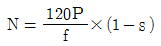
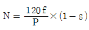
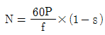
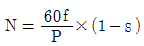
(정답률: 80%)
20. 문 닫힘 안전장치에서 물리적인 접촉에 의해 작동되는 장치는?
- 광전장치
- 초음파 장치
- 세이프티 슈
- 도어 인터록
(정답률: 75%)
2과목: 승강기 설계
21. 종탄성 계수 E=7000kg/mm2, 직경= 12mm인 로프를 6본 사용하는 엘리베이터의 적재하중이 1150kg, 카자중 1700kg 일 때, 권상로프의 늘어난 길이는 약 몇 mm인가? (단, 승강행정은 60m이다.)
- 30
- 36
- 41
- 46
(정답률: 55%)
22. 주어진 조건과 같은 엘리베이터의 무부하 및 전부하시의 트랙션비는 각각 약 얼마인가?
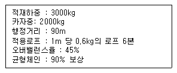
- 무부하시: 1.47, 전부하시 : 1.58
- 무부하시: 1.52, 전부하시 : 1.47
- 무부하시: 1.58, 전부하시 : 1.60
- 무부하시: 1.60, 전부하시 : 1.46
(정답률: 48%)
23. 전기식 엘리베이터의 제어회로 및 안전회로의 경우, 전도체와 전도체 사이 또는 전도체와 접지 사이의 직류 전압 평균값 및 교류 전압 실효값은 최대 몇 V이하이어야 하는가?
- 220
- 250
- 380
- 450
(정답률: 66%)
24. 비상통화장치에 대한 설명으로 틀린 것은?
- 비상통화장치는 정상전원으로만 작동하여야 한다.
- 구출활동 중에 지속적으로 통화할 수 있는 양방향 음성통신이어야 한다.
- 승객이 외부의 도움을 요청하기 위하여 쉽게 식별 가능하고 접근이 가능하여야 한다.
- 카 내와 외부의 소정의 장소를 연결하는 통화장치는 당해 시설물의 관리인력이 상주하는 장소에 이중으로 설치되어야 한다.
(정답률: 87%)
25. 소선의 표면에 아연도금을 하여 녹이 쉽게 나지않기 때문에 습기가 많은 장소에 적합한 와이어로프는?
- A종
- B종
- E종
- G종
(정답률: 80%)
26. 엘리베이터 설비능력의 질적 지표는 무엇인가?
- 투자비용
- 속도와 대수
- 평균운전간격
- 단위시간 수송능력
(정답률: 56%)
27. 에스컬레이터의 모터 용량을 산출하는 식으로 옳은 것은? ( 단 G: 적재하중, V: 속도 , n : 총효율, B : 승객승입률, sinΘ: 에스컬레이터의 경사도)
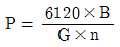
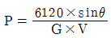
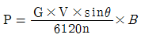
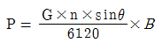
(정답률: 85%)
28. 엘리베이터용에 적용되는 레일의 치수를 결정하는데 고려되어야 할 요소가 아닌 것은?
- 레일용 브라켓의 크기
- 지진이 발생할 때 건물의 수평진동
- 카에 하중이 적재될 때 카에 걸리는 회전모멘트
- 비상정지장치가 작동될 때 레일이 걸리는 좌굴하중
(정답률: 77%)
29. 다음 중 응력에 대한 관계식으로 적절한 것은?
- 탄성한도>허용응력≥사용응력
- 탄성한도>사용응력≥허용응력
- 허용응력>탄성한도≥사용응력
- 허용응력>사용응력≥탄성한도
(정답률: 77%)
30. 비상정지장치 중 거리와 정지력에 관하여 그림과 같은 물리적인 특성을 갖는 것은?
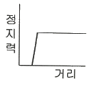
- 슬랙로프 세이프티
- F.G.C형 비상정지장치
- F.W.C형 비상정지장치
- 즉시 작동형 비상정지장치
(정답률: 80%)
31. 엘리베이터용 전동기와 범용 전동기를 비교할 때 엘리베이터용 전동기에 요구되는 특성이 아닌 것은?
- 기동토크가 클 것
- 기동전류가 적을 것
- 회전부분의 관성 모멘트가 클 것
- 기동횟수가 많으므로 열적으로 견딜 것
(정답률: 78%)
32. 변압기의 전압강하율(%)을 나타내는 식으로 옳은 것은?
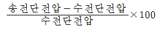
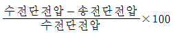
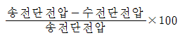
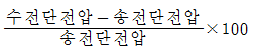
(정답률: 60%)
33. 유입완충기의 설계에 관하여 틀린 것은?
- 카측 최소적용중량은 카 자중으로 한다.
- 균형추측 최대적용중량은 균형추 중량으로 한다.
- 정격속도의 115%속도로 충돌할 경우 평균감속도 1gn 이하가 되도록 행정을 설계하여야 한다.
- 종단층강제감속장치를 이용하는 경우 행정은 강제감속된 속도의 115%속도로 충돌하여 1gn 이하의 평균감속도로 감속하여 정지하여야 한다.
(정답률: 59%)
34. 계자 권선의 저항이 0.1Ω 이고, 전기자 권선의 저항이 0.4Ω 인 직률 직권전동기가 있다. 이 전동기에 380V의 단자전압을 인가하였더니 20A의 전류가 흘렀다. 역기전력은 몇 V인가?
- 368
- 370
- 372
- 376
(정답률: 45%)
35. 지름이 10mm인 축이 1800rpm으로 회전하고 있을 때 축의 비틀림 응력을 400kg/cm2 라고 하면 전달마력은 약 PS인가?
- 0.97
- 1.97
- 2.97
- 3.97
(정답률: 51%)
36. 도어클로저에 대한 설명으로 틀린 것은?
- 고속 도어장치에는 스프링클로저 방식 적합하다.
- 웨이트클로저 방식은 도어 닫힘이 끝날 때 힘이 약해진다.
- 도어가 열린 상태에서의 규제가 제거되면 자동적으로 도어가 닫히는 방식이 일반적이다.
- 웨이트클로저 방식은 웨이트가 승강로 벽을 따라 내려뜨리는 것과 도어판넬 자체에 달리는 것 2종이 있다.
(정답률: 71%)
37. 사무실 건물의 엘리베이터 교통수요 산출 및 수송능력을 산정하려 할 경우 고려해야 할 내용으로 틀린 것은?
- 지하층 서비스를 반드시 고려하여야 한다.
- 아침 출근 시 상승 피크의 교통시간을 조사한다.
- 출근 시 및 중식 시의 수송능력 목표치를 정한다.
- 거주인구 산출을 위해 층별인구, 층별 유효면적, 렌탈비 및 1인당 점유면적을 확인한다.
(정답률: 72%)
38. 재해 시 관제운전의 우선순위로 옳은 것은?
- 지진시 관제 → 화재시 관제 → 정전시 관제
- 화재시 관제 → 지진시 관제 → 정전시 관제
- 지진시 관제 → 정전시 관제 → 화재시 관제
- 화재시 관제 → 정전시 관제 → 지진시 관제
(정답률: 75%)
39. 엘리베이터 소음 및 진동을 저감하기 위해 설계 시 고려하여야 할 사항으로 틀린 것은?
- 기계실은 콘크리트 구조로 한다.
- 기계실 출입문은 차음 구조로 한다.
- 균형추를 거실 인전 벽체에 설치한다.
- 기계실 바닥 로프구멍은 최소화 하고 방음 커버를 부착한다.
(정답률: 76%)
40. 기어전동에 대한 특성으로 틀린 것은?
- 축압력이 크다.
- 회전비가 정확하다.
- 큰 감속이 가능하다.
- 소음진동이 발생한다.
(정답률: 58%)
3과목: 일반기계공학
41. 유압펌프의 실제 토출압력이 500kgf/cm2, 실제 펌프 토출량이 200cm3/s, 펌프의 전효율이 0.9일 때 펌프축이 구동하는 데 필요한 동력은 약 몇 kw인가?
- 10.9
- 14.8
- 21.8
- 29.6
(정답률: 47%)
42. 다음 중 프레스 가공에서 전단가공이 아닌 것은?
- 블랭킹(blanking)
- 펀칭(punching)
- 트리밍(trimming)
- 스웨이징(swaging)
(정답률: 70%)
43. 유압 작동유의 점도가 높을 때 나타나는 현상으로 틀린 것은?
- 동력 손실의 증대
- 내부 마찰의 증대와 온도 상승
- 펌프 효율 저하에 따른 온도 상승
- 장치의 파이프 저항에 의한 압력 증대
(정답률: 56%)
44. 게이지 블록이나 마이크로미터 측정면의 평면도를 측정하는 데 가장 적합한 측정기는?
- 공구 현미경
- 옵티컬 플랫
- 사인바
- 정반
(정답률: 72%)
45. 다음 중 순도가 가장 높으나 취약하여 가공이 곤란한 동의 종류는?
- 전기동
- 정련동
- 탈산동
- 무산소동
(정답률: 65%)
46. 단순보의 정중앙에 집중하중이 작용할 때, 이 보의 최대 처짐량에 대한 설명으로 틀린 것은?
- 지지점 사이의 거리의 3제곱에 반비례한다.
- 단면 2차 모멘트에 반비례한다.
- 세로탄성계수에 반비례한다.
- 집중하중 크기에 비례한다.
(정답률: 51%)
47. 리벳 구멍이 압축하중(P)에 의해 파괴될 때 압축응력 계산식은? (단, σc는 압축응력, t는 판두께, d는 리벳지름)
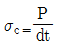
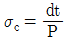
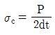
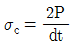
(정답률: 58%)
48. 주물에서 중공부분이 필요할 때 사용하는 목형으로 가장 적합한 것은?
- 현형
- 회전형
- 코어형
- 부분형
(정답률: 74%)
49. 원형 단면봉에 비틀림 모멘트(T)가 작용할 때 생기는 비틀림각(θ)에 대한 설명으로 옳은 것은?
- 축 길이에 반비례한다.
- 전단탄성계수에 비례한다.
- 비틀림 모멘트에 반비례한다.
- 축 지름의 4제곱에 반비례한다.
(정답률: 42%)
50. 오스테나이트계 스테인리스강의 일반적인 특징으로 틀린 것은?
- 자성체이다
- 내식성이 우수하다.
- 내충격성이 우수하다.
- 염산, 황산 등에 약하다.
(정답률: 64%)
51. 강재 표면에 Zn을 침투,확산시키는 세라다이징법에 의해 개선되는 성질은?
- 전연성
- 내열성
- 내식성
- 내충격성
(정답률: 62%)
52. 센터리스 연산기의 조정숫돌에 의하여 가공물이 회전과 이송을 할 때, 가공물의 이송속도(mm/min)는? (단, d는 조정숫돌의 지름(mm), n은 조정 숫돌의 회전수(rpm), α는 경사각이다.)
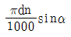
- πdnsinα
- πdntanα
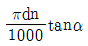
(정답률: 52%)
53. 펌프에서 발생하는 캐비테이션(cavitation)현상의 방지법이 아닌 것은?
- 양쪽 흡입 펌프를 사용한다.
- 2개 이상의 펌프를 사용한다.
- 펌프의 회전수를 최대한 높힌다.
- 펌프의 설치 높이를 낮추어 흡입행정을 짧게한다.
(정답률: 68%)
54. 다음 그림과 같은 타원형 단면을 갖는 봉이 인장하중(P)을 받을 때, 작용하는 인장응력은 얼마인가?
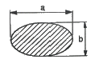
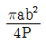
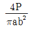
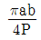
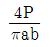
(정답률: 51%)
55. 코일 스프링에서 스프링상수(k)에 대한 설명으로 틀린 것은?
- 스프링 소재 지름의 4승에 비례한다.
- 스프링의 변형량에 비례한다.
- 코일 평균 지름의 3승에 반비례한다.
- 스프링 소재의 전단탄성계수에 비례한다.
(정답률: 47%)
56. 구름베어링과 비교할 때, 미끄럼베어링의 특징으로 옳은 것은?(오류 신고가 접수된 문제입니다. 반드시 정답과 해설을 확인하시기 바랍니다.)
- 호환성이 높은 편이다.
- 구름 마찰이며, 기동 마찰이 작다.
- 비교적 큰 하중을 받으며 충격 흡수 능력이 크다.
- 표준형 양산품으로 제작하기보다는 자체 제작하는 경우가 많다.
(정답률: 55%)
57. 피복 아크 용접결함의 종류에서 용입불량의 원인으로 가장 거리가 먼 것은?
- 이음 설계의 불량
- 용접봉의 선택 불량
- 전류가 너무 높을 때
- 용접 속도가 너무 빠를 때
(정답률: 54%)
58. 나사면의 마찰계수 u와 마찰각 p의 관계식은?
- u= sin p
- u= cos p
- u= tan p
- u= cot p
(정답률: 64%)
59. 비틀림각이 30도인 헬리컬 기어에서 잇수가 50개, 이직각 모듈이 3일 때 바깥지름은 약 mm인가?
- 184.21
- 179.21
- 208.21
- 264.21
(정답률: 47%)
60. 재료의 최대응력과 항복응력 및 허용응력을 적용하여 안전율을 나타내는 식은?
- 허용응력/항복응력
- 항복응력/허용응력
- 최대응력/항복응력
- 항복응력/최대응력
(정답률: 69%)
4과목: 전기제어공학
61. 논리식
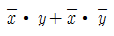
를 간단히 표시한 것은?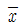
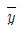
- 0
- x+y
(정답률: 70%)
62. 단면적 S(m2)를 통과하는 자속을
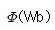
라 하면 자속밀도 B(Wb/m2)를 나타낸 식으로 옳은 것은?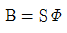
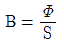
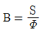
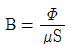
(정답률: 61%)
63. 서보기구에서 주로 사용하는 제어량은?
- 전류
- 전압
- 방향
- 속도
(정답률: 59%)
64. 내부저항 90Ω, 최대지시값 100㎂의 직류전류계로 최대지시값 1mA를 측정하기 위한 분류기 저항은 몇 Ω인가?
- 9
- 10
- 90
- 100
(정답률: 45%)
65. A= 6+j8, B= 20∠60°일 때 A+B를 직각좌표형식으로 표현하면?
- 16+ j18
- 26+ j28
- 16+ j25.32
- 23.32+ j18
(정답률: 57%)
66. 평행한 두 도체에 같은 방향의 전류를 흘렸을 때 두 도체 사이에 작용하는 힘은?
- 흡인력
- 반발력
- I/2πr의 힘
- 힘이 작용하지 않는다.
(정답률: 60%)
67. 빛의 양(조도)에 의해서 동작되는 CdS를 이용한 센서에 해당하는 것은?
- 저항 변화형
- 용량 변화형
- 전압 변화형
- 인덕턴스 변화형
(정답률: 54%)
68. 어떤 저항에 전압 100V, 전류 50A를 5분간 흘렀을 때 발생하는 열량은 약 몇 kcal인가?
- 90
- 180
- 360
- 720
(정답률: 51%)
69. 그림과 같은 펄스를 라플라스 변환하면 그 값은?
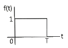
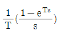
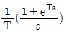
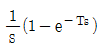
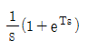
(정답률: 52%)
70. 피드백 제어계의 제어장치에 속하지 않는 것은?
- 설정부
- 조절부
- 검출부
- 제어대상
(정답률: 50%)
71. 정현파 전압 v=220√2sin(ωt+30°)V 보다 위상이 90°뒤지고 최대값이 20A인 정현파 전류의 순시값은 몇 A인가?
- 20sin(ωt-30°)
- 20sin(ωt-60°)
- 20√2sin(ωt+60°)
- 20√2sin(ωt-60°)
(정답률: 48%)
72. 100V용 전구 30W와 60W 두 개를 직렬로 연결하고 직류 100V 전원에 접속하였을 때 두 전구의 상태로 옳은 것은?
- 30W 전구가 더 밝다.
- 60W 전구가 더 밝다.
- 두 전구의 밝기가 모두 같다.
- 두 전구가 모두 켜지지 않는다.
(정답률: 68%)
73. 유도전동기에 인가되는 전압과 주파수를 동시에 변환시켜 직류전동기와 동등한 제어 성능을 얻을 수 있는 제어방식은?
- VVVF방식
- 교류 궤환제어방식
- 교류1단 속도제어방식
- 교류2단 속도제어방식
(정답률: 71%)
74. 비례적분미분제어를 이용했을 때의 특징에 해당되지 않는 것은?
- 정정시간을 적게한다.
- 응답의 안정성이 작다.
- 잔류편차를 최소화 시킨다.
- 응답의 오버슈트를 감소시킨다.
(정답률: 50%)
75. 조절계의 조절요소에서 비례미분제어에 관한 기호는?
- P
- PI
- PD
- PID
(정답률: 52%)
76. 그림과 같은 블록선도에서 X3/X1를 구하면?
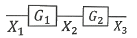
- G1+G2
- G1-G2
- G1∙G2
- G1/G2
(정답률: 56%)
77. 보일러와 자동연소제어가 속하는 제어는?
- 비율제어
- 추치제어
- 추종제어
- 정치제어
(정답률: 49%)
78. 탄성식 압력계에 해당되는 것은?
- 경사관식
- 압전기식
- 환상평형식
- 벨로우즈식
(정답률: 63%)
79. 3상 유도전동기의 출력이 5kW, 전압 200V, 역률 80%, 효율이 90%일 때 유입되는 선전류는 약 몇 A인가?
- 14
- 17
- 20
- 25
(정답률: 35%)
80. 전원전압을 안정하게 유지하기 위하여 사용되는 다이오드로 가장 옳은 것은?
- 제너다이오드
- 터널다이오드
- 보드형다이오드
- 바렉터 다이오드
(정답률: 67%)